← 返回阅读库 · 原论文目录
论文讲解阅读文档 · 多模态语言模型 · v039
Ferret Refer and Ground Anything Anywhere at Any Granularity[2310.07704]
视频时长 00:09:42；讲解文字 4,160 字符；提取讲解画面 65 张。按视频原顺序阅读，每段文字保留时间戳。
文字来自整段视频的自动语音转写，按自然停顿分段，并与 PPT / 论文页面 / 演示画面对齐。未将讲解压缩为摘要；术语、数字和口述公式请结合画面及原论文核对。 阅读稿已校正规范部分明确术语误识别；原始逐字稿和每处修改记录另行保留。
讲解画面为源视频截图（640×360），不是可编辑 PPT 文件。全片按每秒 2 帧扫描内容变化，逐步展开页保留；连续动画保留代表画面。清晰度受源视频限制。
下载完整资料包 · 含离线 HTML、PDF、Word、全部 PPT 画面和字幕。
原论文与材料
Ferret: Refer and Ground Anything Anywhere at Any Granularity · 下载完整 PDF（30 页）
按时间阅读
00:00:00–00:00:05 · 画面 001
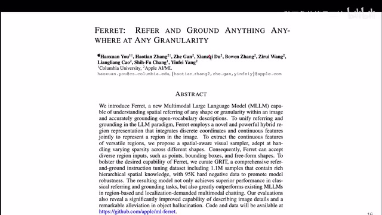
00:00:00–00:00:05 · 画面 001大家好啊,今天我们来快速说一篇论文 FerretRefer and ground anything anywhere at any granularity。那么这一篇呢，你可以认为是像之前的 Flamingo 也好，LLaVA 也好，在他们之上的延伸。我们知道之前我们介绍过这两篇文章，他们的核心的思想呢，都是我的用户给一张图片，然后呢根据这张图片提一些问题，那么这些模型呢就回答这些问题去帮助这个用户。
00:00:05–00:00:06 · 画面 002
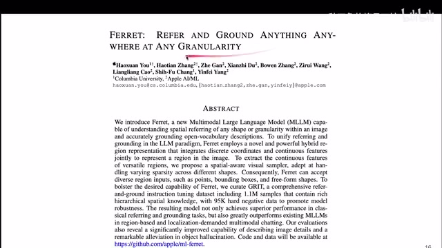
00:00:05–00:00:06 · 画面 00200:00:06–00:00:10 · 画面 003
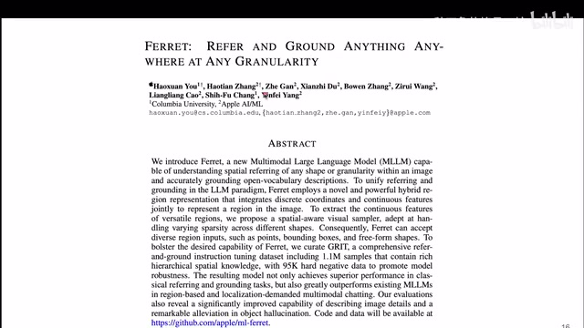
00:00:06–00:00:10 · 画面 00300:00:10–00:00:47 · 画面 004
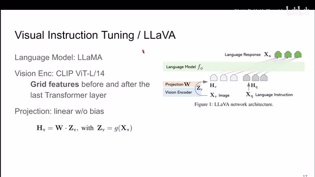
00:00:10–00:00:47 · 画面 004但是呢，在问来问去的这些问题呢，回答出来的这些问题呢，它都是纯文本的形式的。你如果想让它的回答跟图像有直接的关联，那还是做不到的。所以看下来就相对的比较 young simple，有些时候甚至说 naive。那么当然这之后肯定就有人会继续沿这个方向往下做嘛，你像这个 Emu 还有这个 GILL，它都是把这个 language model 输出的这些文本。
00:00:47–00:00:49 · 画面 005
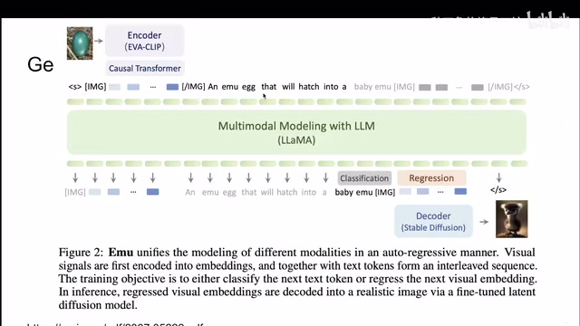
00:00:47–00:00:49 · 画面 00500:00:49–00:01:03 · 画面 006
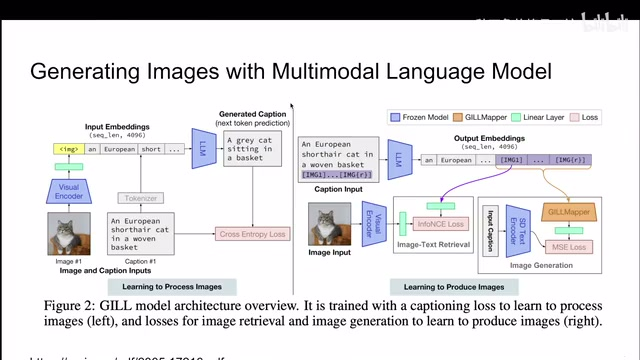
00:00:49–00:01:03 · 画面 006送到这个 stable diffusion 里面，diffusion model 里面，然后呢让它去生成一个相应的图像。那么这个呢是一个方向，但是呢本文呢走的是另一个方向，就是 referring and grounding，意思就是说我用户指定图像中的某一个区域，我们去详细的去讨论它，探讨它。
00:01:03–00:02:09 · 画面 007
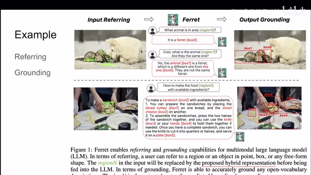
00:01:03–00:02:09 · 画面 007同时呢，我的 agent 呢也能给出图像中具体的一些东西的，比如说坐标也好，它的类型也好，作为回答。那打个比方来说，Flamingo LLaVA 就像你跟客服打电话一样，只不过一开始呢你把一张照片通过传真发给客服了，然后呢客服就根据你发过去的一个图然后开始聊。那么本文的方法呢就像你们现在两个人在一个房间里面共同指着这一张图把它放在白板上。
然后你说一个地方戳戳这个图，然后呢这个模型呢回答一个地方。那必要的时候呢，它会把图中相关的东西指给你看。那么这个呢就是本文的方法。那么当然我们都知道，在这背后驱动这些所有的东西的呢，实际上是一个 language model，一个大的语言模型。所以呢，重点就是我们怎么样让语言模型能够把这个图也好，包括这个 bounding box 也好，让语言模型能够处理这些东西，也就是说把这些东西给 language model 一个抓手。
那么本文的核心就是怎么样把用户的输入的这些东西变成一个 language model 能够处理的 representation，同时让 language model 输出一个 bounding box。那么当然 language model 输出 bounding box 这个东西也不是什么新鲜的东西了，你像 RT2 里面虽然它是 robotics，但是它是直接让 language model 输出 actionlanguage model as general pattern machine 这篇文章我们也讲了是一个很悬的文章。
00:02:09–00:02:11 · 画面 008
00:02:09–00:02:11 · 画面 00800:02:11–00:02:44 · 画面 009
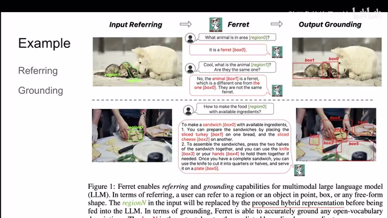
00:02:11–00:02:44 · 画面 009那么当然还有之前的 VisionLLM 等等，那么这些文章呢告诉我们这个 language model 是可以通过各种方法成为一些有用的坐标。那么下面呢我们重点要解决的就是怎么样让这个输入让 language model 能够处理。那么在本文的设计中呢，我们当我们谈论一张图片的时候，那么这里作者定义了三种用户的输入的类型，第一种呢就是一个点，就是 XY 的坐标，一个点。那第二种呢 bounding box，左上角右下角两个点的坐标，四个值结束了。
00:02:44–00:02:50 · 画面 010
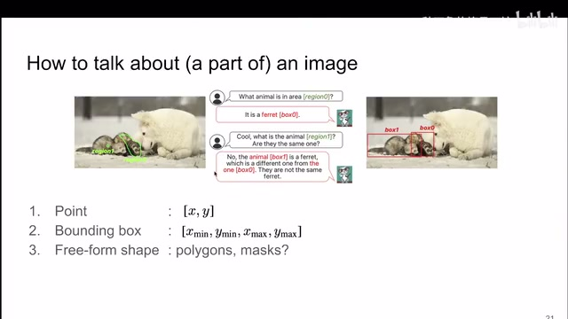
00:02:44–00:02:50 · 画面 01000:02:50–00:02:51 · 画面 011
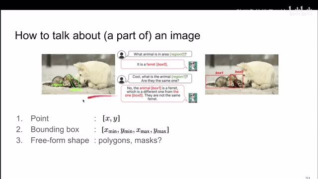
00:02:50–00:02:51 · 画面 01100:02:51–00:02:56 · 画面 012
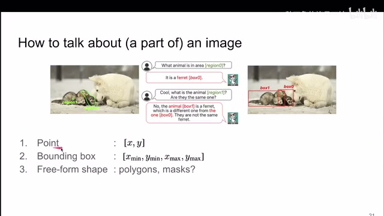
00:02:51–00:02:56 · 画面 01200:02:56–00:02:57 · 画面 013
00:02:56–00:02:57 · 画面 01300:02:57–00:02:59 · 画面 014
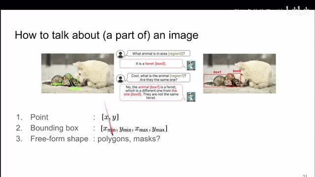
00:02:57–00:02:59 · 画面 01400:02:59–00:03:03 · 画面 015
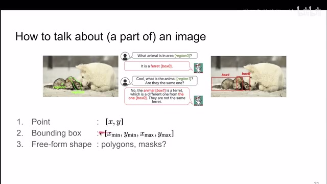
00:02:59–00:03:03 · 画面 015那么第三个就是这种自由的图形，它没有固定的形状，这个时候比如说你可以用一个 binary mask 或者说是用一个 polygon 把它的边缘给它表示出来等等等等。那么在这三种交互的基础上，作者就是要设计一个机制，把它变得能够让 language model 去处理。这里作者定义了当我们。
00:03:03–00:03:07 · 画面 016
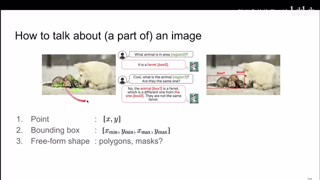
00:03:03–00:03:07 · 画面 01600:03:07–00:03:13 · 画面 017
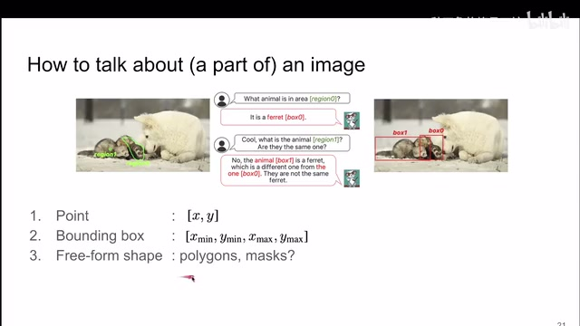
00:03:07–00:03:13 · 画面 01700:03:13–00:03:17 · 画面 018
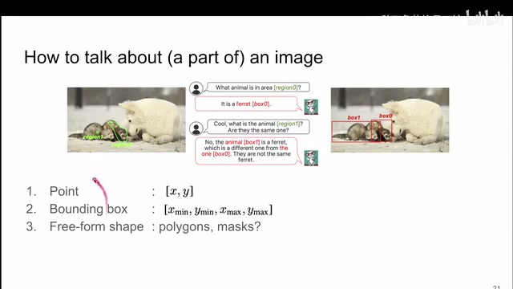
00:03:13–00:03:17 · 画面 01800:03:17–00:03:56 · 画面 019
00:03:17–00:03:56 · 画面 019要去操作这个图像，无论是你是处理用户输入的这个 referring 还是你模型输出的这么一个 bounding box，你把它理解成 language model 和这个 image 它们之间的这个接口就好。那么这个接口它要有一个协议对吧，这个协议是什么就是这个区域里面是什么东西加上 coordinate 加上它的这个 feature。那一个点呢就是 xy 的值嘛，一个 bounding box。
两个角四个直然后呢那对于这种自由的形状呢它还是取到左上和右下两个点但是它的重点在于后面的这个东西它为我们提供了除了这个坐标跟图像语义具体相关的这些内容那么这里呢作者的设计呢我们看到对于一个点来说它就画了一个圆以这个点的这个位置为圆心画一个圆半径为五的这么一个圆
00:03:56–00:03:57 · 画面 020
00:03:56–00:03:57 · 画面 02000:03:57–00:04:13 · 画面 021
00:03:57–00:04:13 · 画面 021那么这个圆的区域就是我们想要讨论的区域我们后面呢这些所有的 visual feature 呢就从这里来那对于 bounding box 就简单了嘛你就直接把这个 bounding box 拿过来而像这种自由自在的形状呢你就在这个形状里面把你的 feature 去提出来那么通过这样一种定义呢作者把所有三种类型的这个 referral 都统一到这样一个协议下面来那么像 region name 这个东西好解决这个图里面是什么就是什么
00:04:13–00:04:14 · 画面 022
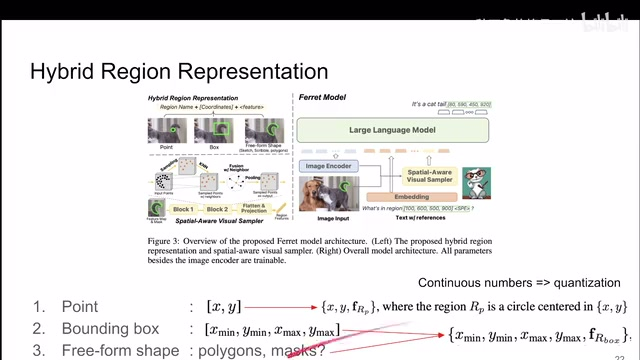
00:04:13–00:04:14 · 画面 02200:04:14–00:04:18 · 画面 023
00:04:14–00:04:18 · 画面 02300:04:18–00:04:19 · 画面 024
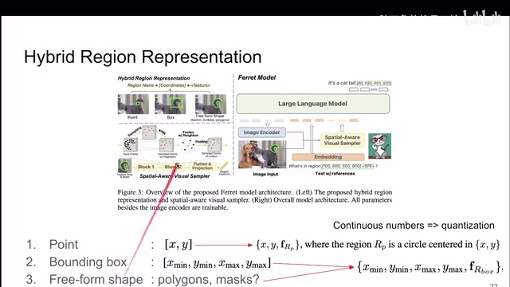
00:04:18–00:04:19 · 画面 02400:04:19–00:04:24 · 画面 025
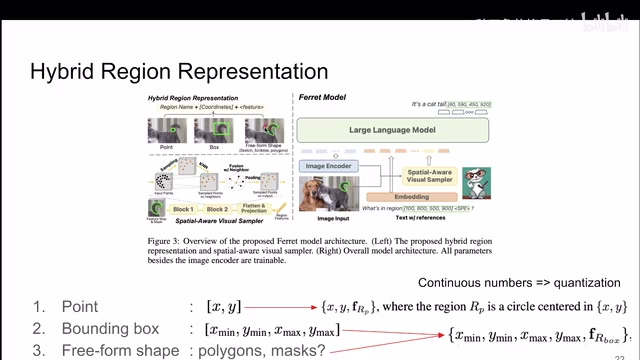
00:04:19–00:04:24 · 画面 02500:04:24–00:04:25 · 画面 026
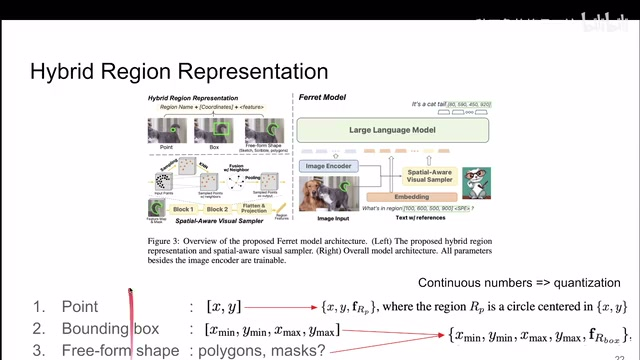
00:04:24–00:04:25 · 画面 02600:04:25–00:04:46 · 画面 027
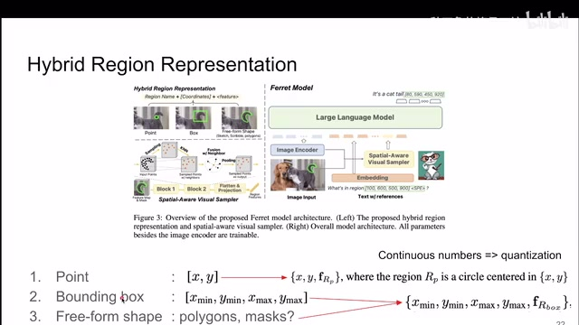
00:04:25–00:04:46 · 画面 027如果我们不知道是什么我们叫它 area 或者叫这个 region 就可以了那这个坐标也好解决对吧虽然它是一个连续的值我们完全可以把它做一下量化那这里呢作者把它分成了 1000 份最后剩下的呢就是我们怎么样在一个给定的图像的区域里面提这个 feature 作者的配置跟 LLaVA 一样他是把这个图像送到一个 clip 的这个 vision encoder 里面
00:04:46–00:04:47 · 画面 028
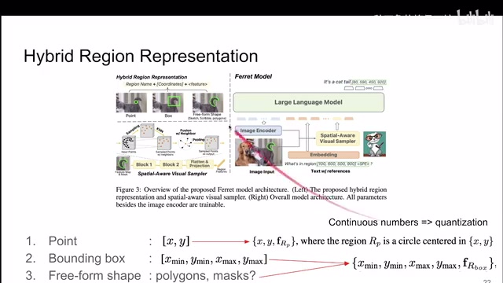
00:04:46–00:04:47 · 画面 02800:04:47–00:04:51 · 画面 029
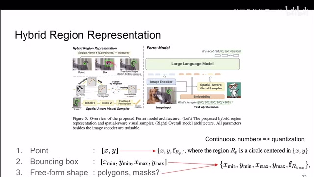
00:04:47–00:04:51 · 画面 02900:04:51–00:04:55 · 画面 030
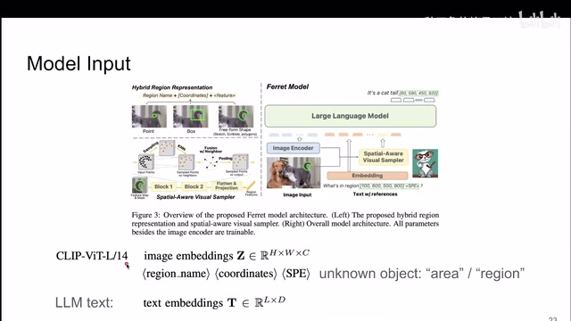
00:04:51–00:04:55 · 画面 03000:04:55–00:04:57 · 画面 031
00:04:55–00:04:57 · 画面 03100:04:57–00:04:59 · 画面 032
00:04:57–00:04:59 · 画面 032得到这个 image embedding 它的尺寸是跟原始的图像的尺寸空间尺寸是相同的然后呢这个是我们之前说的这个对于任何一个描述图像中一个区域的方法那么最后文本的输入呢你就直接是这个 language model 自己的 tokenizer 它的 text embedding 就可以了这个呢是模型的输入
00:04:59–00:05:01 · 画面 033
00:04:59–00:05:01 · 画面 03300:05:01–00:05:03 · 画面 034
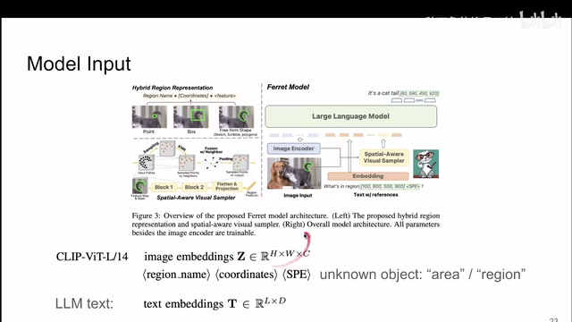
00:05:01–00:05:03 · 画面 03400:05:03–00:05:04 · 画面 035
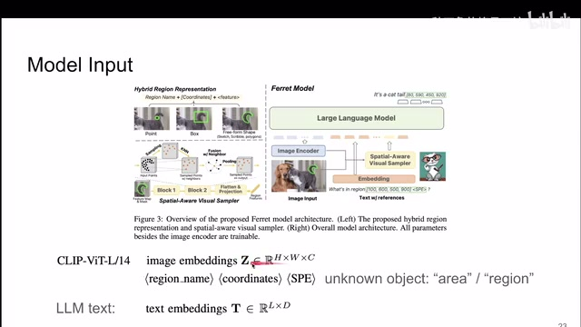
00:05:03–00:05:04 · 画面 03500:05:04–00:05:06 · 画面 036
00:05:04–00:05:06 · 画面 03600:05:06–00:05:07 · 画面 037
00:05:06–00:05:07 · 画面 03700:05:07–00:05:16 · 画面 038
00:05:07–00:05:16 · 画面 03800:05:16–00:05:18 · 画面 039
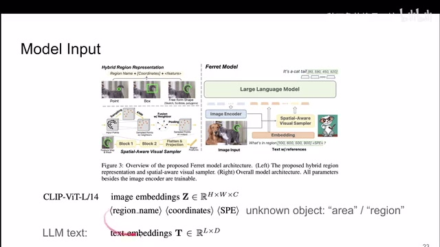
00:05:16–00:05:18 · 画面 039那么下面我们就要看拿到这一整张图像的 feature 之后怎么把这个区域里面有用的 feature 给他拿出来了那么这里呢作者处理他的思路呢跟处理点云是非常像的我们之前也介绍过这个 point transformer 还有一篇神奇的 image as set of points 就是把一张图像当成一个点集来处理那么这里呢处理的思路都是一样的我们给定一个 mask 就是这个中间的区域这个 mask 嘛我们在这个区域里面踩上 n 个点
00:05:18–00:05:46 · 画面 040
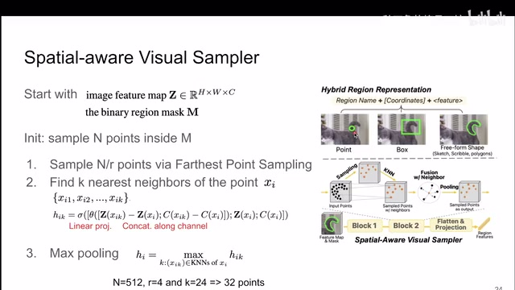
00:05:18–00:05:46 · 画面 04000:05:46–00:05:47 · 画面 041
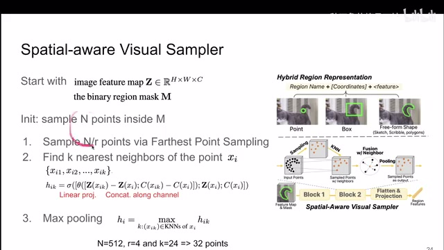
00:05:46–00:05:47 · 画面 04100:05:47–00:05:57 · 画面 042
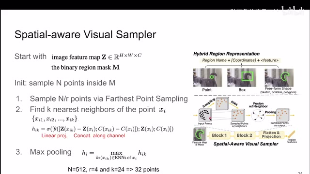
00:05:47–00:05:57 · 画面 042那么这个 n 一开始是很大的我们要把这里面的 feature 聚集起来同时减少这个 n 的数量怎么办呢我们在这个 n 个点的基础上采出 2 分之 n 个点来用这个 FPS 算法然后采出来的每个点之后找它的 k 个邻居那么这 k 个邻居就用来给这一个点提供新的 feature 每一个邻居的 feature 减去当前这个点的 feature 串上邻居的坐标减去这个点的坐标
00:05:57–00:05:58 · 画面 043
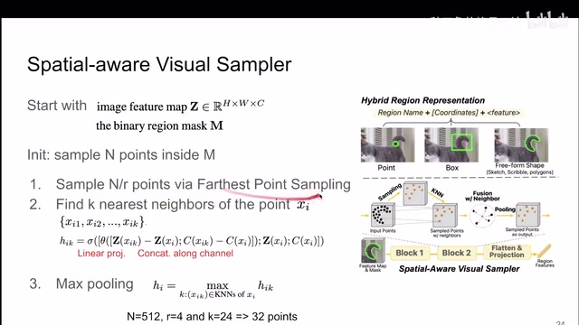
00:05:57–00:05:58 · 画面 04300:05:58–00:06:01 · 画面 044
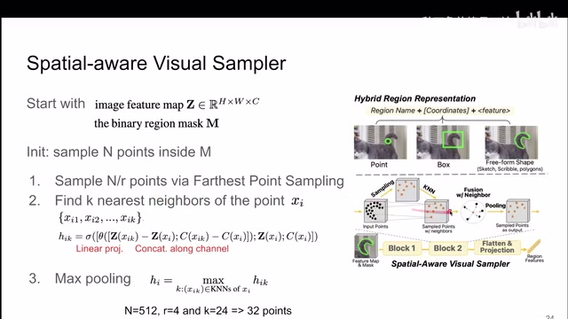
00:05:58–00:06:01 · 画面 04400:06:01–00:06:07 · 画面 045
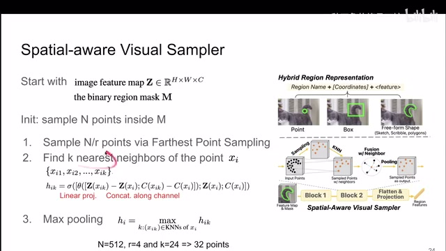
00:06:01–00:06:07 · 画面 04500:06:07–00:06:16 · 画面 046
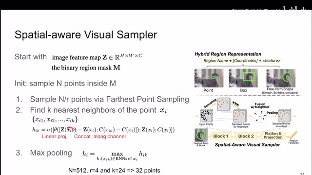
00:06:07–00:06:16 · 画面 046那这一整个东西送到一个 linear layer 里面然后呢再串上当前这个点的 feature 当前这个点的坐标一起再送一个 linear layer 那这样子呢你的每一个邻居都有这么一个 featureHIK 那么对于一个点的 K 个邻居来说最后呢做一个这个 max pooling 得到的这个 feature 就是采样过后的这个点所在的 feature 就像图里显示的这样子那么你一个 block 之后
00:06:16–00:06:17 · 画面 047
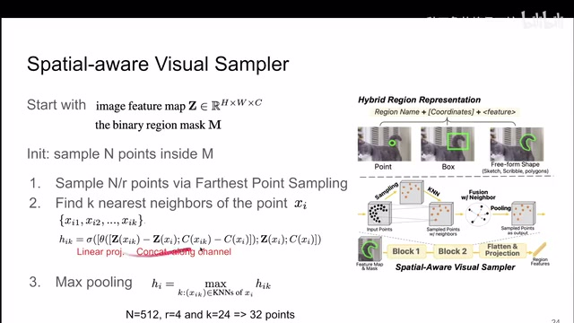
00:06:16–00:06:17 · 画面 04700:06:17–00:06:38 · 画面 048
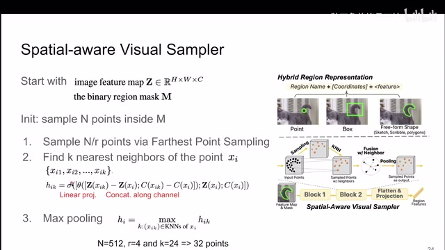
00:06:17–00:06:38 · 画面 04800:06:38–00:06:41 · 画面 049
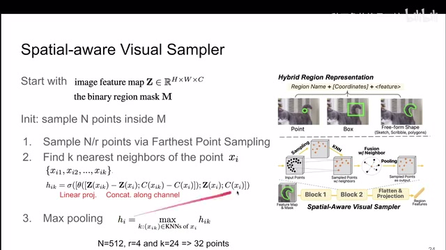
00:06:38–00:06:41 · 画面 04900:06:41–00:06:46 · 画面 050
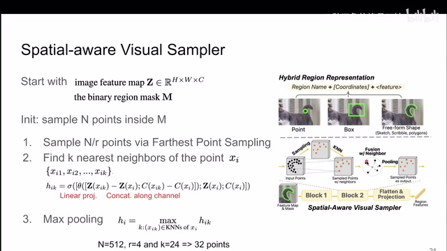
00:06:41–00:06:46 · 画面 050这个点的数量减少了 R 倍嘛那这里呢作者设置了两个 block 就是一开始你采 512 个点过了一个 block 除以 4 过了一个 block 除以 4 那最后呢你就只剩下 32 个点然后这 32 个点的 feature 呢你把它展开然后加一个 linear projection 就是最终得到的我们关于这一个区域里面的图像的 feature 就是这样一个直接的设计
00:06:46–00:06:47 · 画面 051
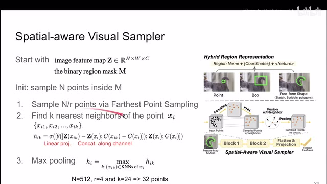
00:06:46–00:06:47 · 画面 05100:06:47–00:06:52 · 画面 052
00:06:47–00:06:52 · 画面 05200:06:52–00:06:55 · 画面 053
00:06:52–00:06:55 · 画面 05300:06:55–00:07:00 · 画面 054
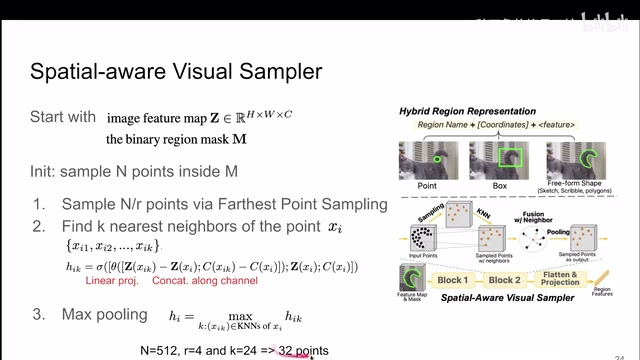
00:06:55–00:07:00 · 画面 05400:07:00–00:07:01 · 画面 055
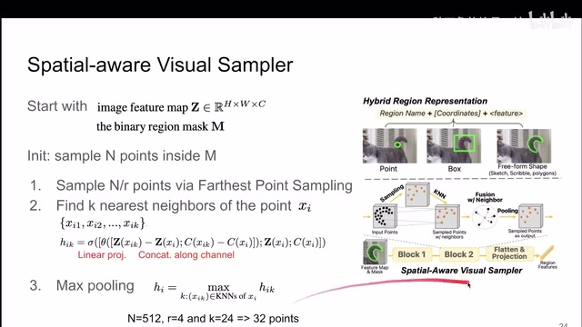
00:07:00–00:07:01 · 画面 05500:07:01–00:07:03 · 画面 056
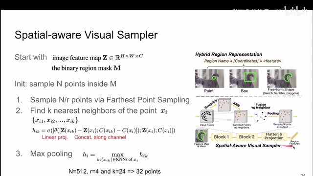
00:07:01–00:07:03 · 画面 05600:07:03–00:07:09 · 画面 057
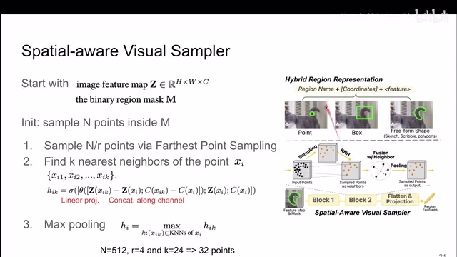
00:07:03–00:07:09 · 画面 057然后我们就可以拿着这个方式构建我们自己的数据集去翻译我们的 language model 了
00:07:09–00:07:13 · 画面 058
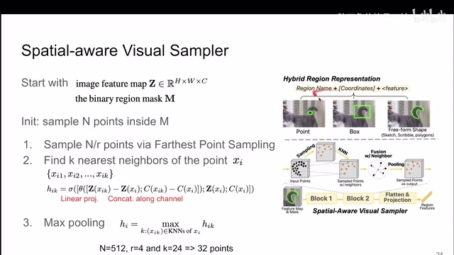
00:07:09–00:07:13 · 画面 05800:07:13–00:08:29 · 画面 059
00:07:13–00:08:29 · 画面 059那这里呢我们来看到作者设计的数据集它包含了五个部分那么前三个部分你从一般的这个公开的数据集上就可以做出来比如说最简单的图里有什么物体那么第二种数据呢就是物体之间的这个几何关系那么第三种呢就是去描述圈圈的这个区域它的本身是什么那么这三个任务呢都是可以通过已经有的数据集去构建的同时呢你在构建的时候呢这里你看到作者这里举了两个例子同样的一张图你可以构建从图像中一个区域到描述的文字输入是区域输出是文字也可以构建输入是文字输出是一个区域这样的一张图两个任务那么当然你也可以设计更复杂的来回的交互那么这个都是很直接的那么再往下呢作者想给这个数据集中灌注一些更多的常识更加有深入的东西那么这个时候呢还是把 GPT-4 搬出来对吧让 GPT-4 去生成一些更加有挑战性的问题生成完了问题还是不能说直接去使用你得看它生成的问题靠不靠谱是不是正确回答了你的 prompt
所以这个时候作者选择用 GPT-4 把生成出来的东西再去检查一遍看看他做的对不对那么这个是另一类数据那么最后一类数据是增加这个系统的鲁棒性的就是你看到上面这些所有的数据它都是已经默认说我们图像中就有我们用户问的这个东西了那这就意味着如果你只按上面的数据来训练模型会出现一种幻觉就是用户说里面有什么他就是有什么哪怕图片里面没有这个模型也自己给你造出一个来
00:08:29–00:08:30 · 画面 060
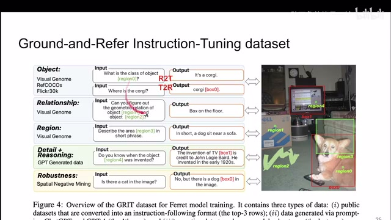
00:08:29–00:08:30 · 画面 06000:08:30–00:08:37 · 画面 061
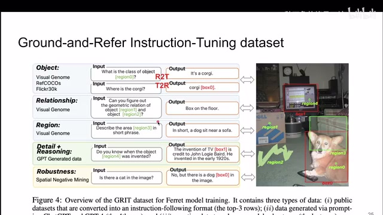
00:08:30–00:08:37 · 画面 06100:08:37–00:08:47 · 画面 062
00:08:37–00:08:47 · 画面 062这是不可以的所以呢很重要的一点就是我们要在数据集中构建一定的数据要教会我们的模型这个东西图像里面没有那用户说这个可以有模型这个真没有这个也是很重要的一个设计那么结合了所有的这些数据集作者呢就可以拿它去 fine-tune 整个模型
00:08:47–00:08:50 · 画面 063
00:08:47–00:08:50 · 画面 06300:08:50–00:09:42 · 画面 064
00:08:50–00:09:42 · 画面 064那本文的作者呢是在 LLaVA 的基础上把模型重新 fine-tune 了一下那么比 LLaVA 新加的部分就直接是从中开始训练那么以上呢就是本文的主要的技术的部分总的来说呢你看到这其实是一个现在这个阶段很标准的一篇文章设计一个从图像到文本的这么一个接口然后呢搞一个数据集自己去做一做然后得到的结果让人满意你按照这个公式继续做至少这半年还是有文章可以发的那么当然就是后面实验的部分不是我们这个节目的重点感兴趣的朋友呢非常推荐你到原文查看那么感谢您的收看再见
00:09:42–00:09:42 · 画面 065
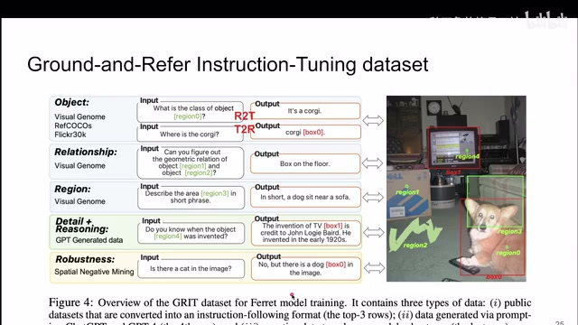
00:09:42–00:09:42 · 画面 065转写与来源说明 · 0 个自动复核提示
保留 25 个原始语音片段，0 个片段触发自动复核提示。提示仅用于定位可能的术语、重复或识别问题，不等于已确认错误。
讲解画面为源视频截图（640×360），不是可编辑 PPT 文件。全片按每秒 2 帧扫描内容变化，逐步展开页保留；连续动画保留代表画面。清晰度受源视频限制。
原视频：paper/合集_2026-10-16_多模态语言模型/[论文速览]Ferret Refer and Ground Anything Anywhere at Any Granularity[2310.07704].mp4
SHA-256：061f6af1f5973ca119a1e2edc831ddc499d9ba21590fb5590a9dbdec5ba882b7
全文按视频语音与画面制作。原论文可从上方链接下载；完整资料包保留全文、原始逐字稿、字幕和校对记录。